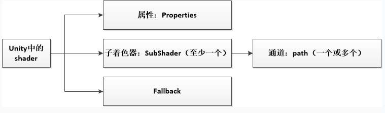
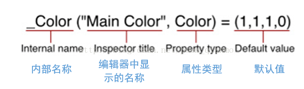
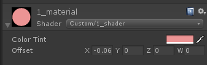
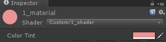
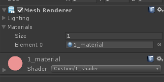

Unity Shader 学习笔记1—— 第一个Shader
@(计算机图形学)[学习笔记, Unity, shader]
[TOC]
Shader结构

Properties

示例：
Properties{
_Color("Color Tint", Color) = (1.0, 1.0, 1.0, 1.0)
_Offset("Offset", Vector) = (0, 0, 0, 0)
}
类似于定义变量。例如_Color一行的含义为：Shader中有个_Color的变量，它的类型是Color, 值由编辑器中的Color Tint来编辑。效果：

SubShader 和 Fallback
SubShader是Unity Shader用来支持不同显卡的方式。当Unity加载一个Shader时，会从这个Shader中选取第一个可以支持的SubShader加载，如果都不支持，使用FallBack指定的Shader
SubShader中每个渲染流程可以用Pass包起来，一个SubShader中可以有多个渲染流程
一个示例
Shader "Custom/1_shader" {
Properties{
_Color("Color Tint", Color) = (1.0, 1.0, 1.0, 1.0)
_Offset("Offset", Vector) = (0, 0, 0, 0)
}
SubShader{
Pass {
CGPROGRAM
//定义顶点着色器和片元着色器的代码
#pragma vertex vert
#pragma fragment frag
fixed4 _Color;
fixed4 _Offset;
float4 vert(float4 v : POSITION) : SV_POSITION {
//意思是将模型空间中的点转换为剪裁空间（屏幕）中的点，然后加上offset
return UnityObjectToClipPos(v) + _Offset;
}
fixed4 frag() : SV_Target {
return _Color;
}
ENDCG
}
}
}
使用
-
创建shader文件 在Unity Project中右击，选择
Create->Shader->Standard Surface Shader，创建完成后改名，然后将自己的代码替换掉原来的代码。 -
创建Meterial 创建后，将Shader设为自己的Shader 
-
MeshRender使用 创建一个GameObject, 增加MeshRender组件，将材质设为刚才创建的材质，就可以看到效果了 
comments powered by Disqus